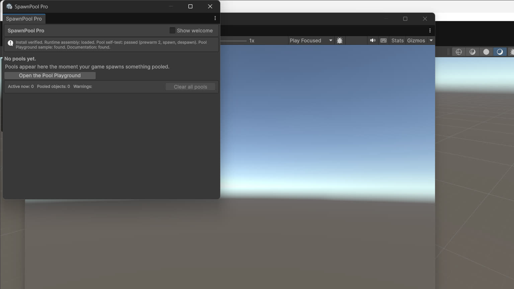

SpawnPool Pro · ByteLura
Installation & Setup
Requirements
- Unity 2022.3 LTS or Unity 6. The automated acceptance evidence is recorded on Unity 6000.5.4f1 and Unity 2022.3.22f1.
- No package dependencies. SpawnPool Pro declares no dependencies beyond Unity itself, and installing it installs nothing else.
Import
Import the package from the Asset Store in the usual way. After import:
- Nothing appears in your scene, and nothing needs to.
- No folders, manager objects, or configuration assets are created for you to fill in — pooling has no project state to create.
- The product home is the window at
Tools > ByteLura > SpawnPool Pro.
First open — the welcome block
The first time you open Tools > ByteLura > SpawnPool Pro in a project, the window shows its welcome block: the product name, the outcome line, the version line (Version 1.0.0), and four quick actions:

- Open the Pool Playground — imports the sample if it is not imported yet, then opens its scene.
- Verify Install — runs the built-in checks described below.
- Documentation — opens the Quick Start shipped inside the package.
- Support — opens the ByteLura publisher page on the Asset Store.
A "Show welcome on open" toggle in the header persists through editor preferences. On later opens the welcome block starts collapsed and can be re-expanded with one click.
The Setup flow — Verify Install
Verify Install is the product's setup action. Run it from the welcome block or from Tools > ByteLura > SpawnPool Pro > Verify Install.
It checks, and reports in plain language in the window's header status line, that:
- the package's assemblies have loaded,
- the sample is present or can be imported, and
- one self-test pool can prewarm, spawn, and despawn in the Editor.
Verify Install is idempotent. It is safe to re-run at any time, and it changes nothing in your project.
Reset path
There are no persistent settings in version 1, so there is nothing else to reset. Full teardown back to the post-import state is one action:
- the Clear All Pools button in the window footer, or
PoolManager.ClearAll()from code,
which destroys every pooled instance, the pool root, and the driver.
Importing the sample
The Pool Playground sample can be imported either way:
- from the welcome block's Open the Pool Playground action, which imports it for you, or
- from the Package Manager's Import button for the Pool Playground sample, like any package sample.
See the Sample Guide for the guided tour of the sample.
If something looks wrong after import
- The window does not open, or opens empty: run Verify Install from the menu and read its per-check report.
- Your pools do not appear: pools appear in the dashboard the moment your game spawns something pooled — an empty dashboard before the first pooled spawn is the expected empty state, not an error.
- More cases are covered on the Troubleshooting & FAQ page.